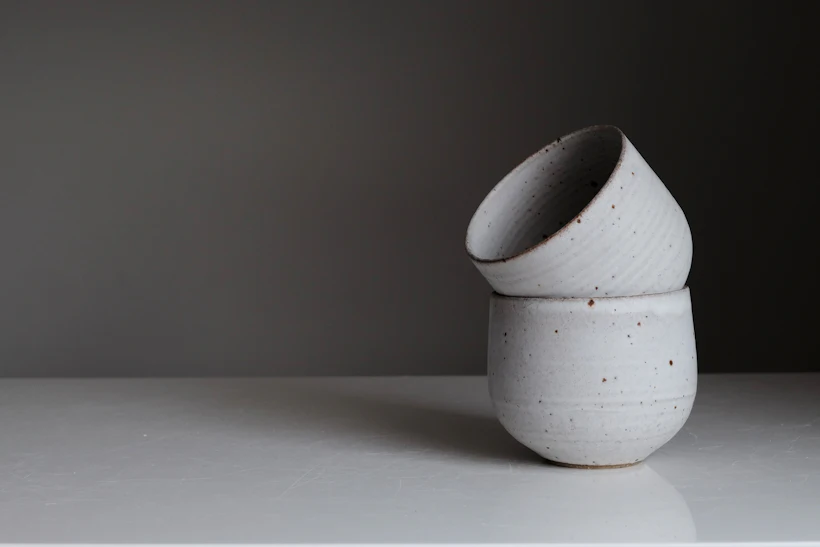
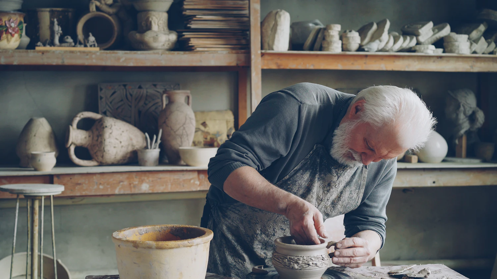
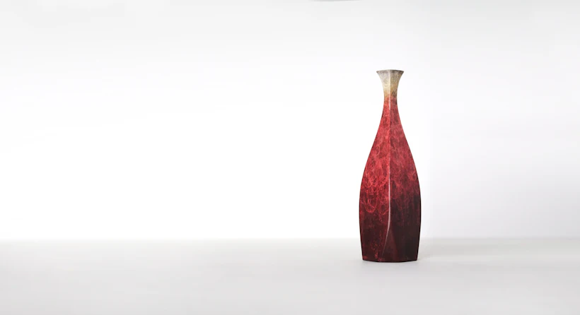
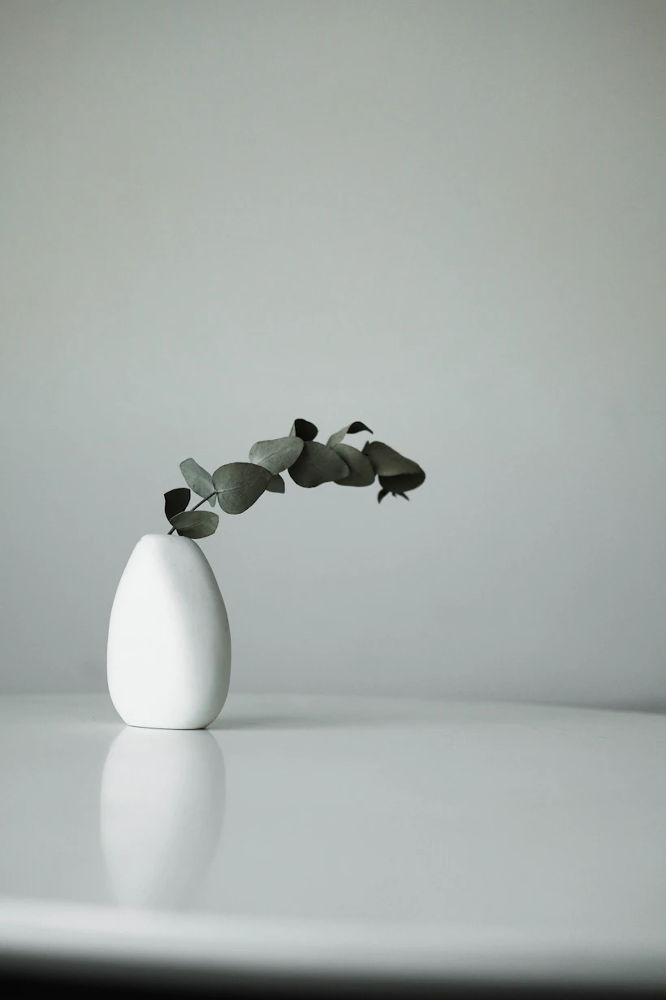

01 / VASE · TERRE BLANCHE
CÉRAMIQUE CONTEMPORAINE · PIÈCES SINGULIÈRES
Des objets façonnés à la main, pensés pour traverser les saisons et trouver leur place chez vous.
FAÇONNÉ LENTEMENT
Pour vivre longtemps.

01 — LA SÉLECTION
Chaque objet est une variation de matière, de feu et de main. Il n’y en a jamais deux tout à fait pareils.
3 OBJETS
01 / VASE · TERRE BLANCHE

02 / VASE · TERRE ROUGE

03 / VASE · TERRE BLANCHE
02 — LE GESTE
« Ce qui est fait lentement
trouve souvent sa place. »
Atelier Orée est une marque fictive imaginée autour du travail de la terre. La boutique privilégie les photos de matière, une sélection courte et des fiches produits précises : une expérience de vente qui laisse respirer les objets.
UN PROJET QUI MÉRITE
SON PROPRE UNIVERS.